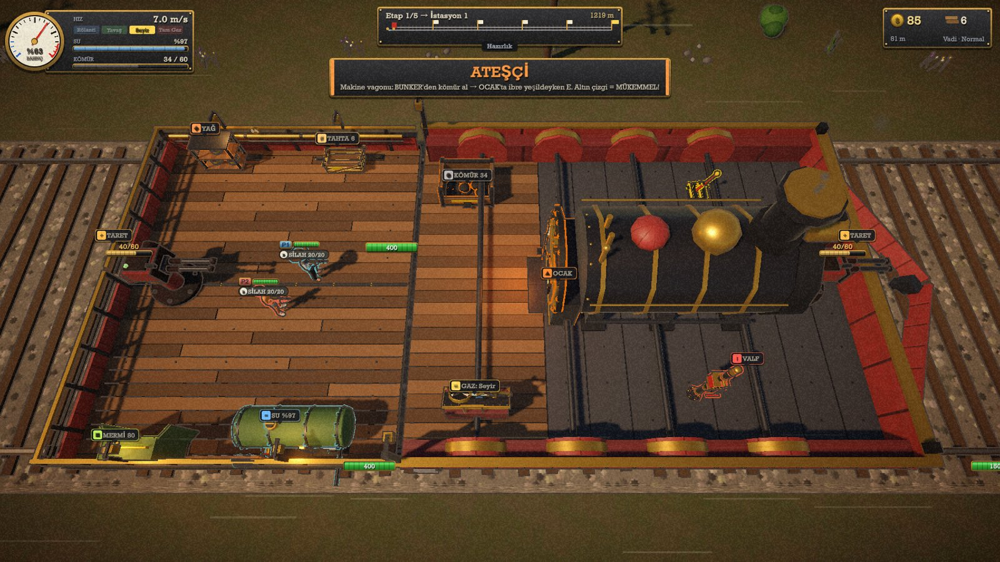
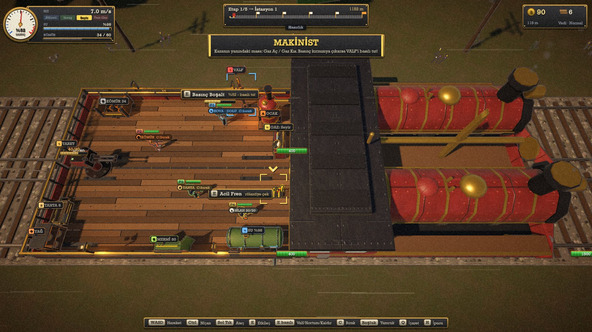
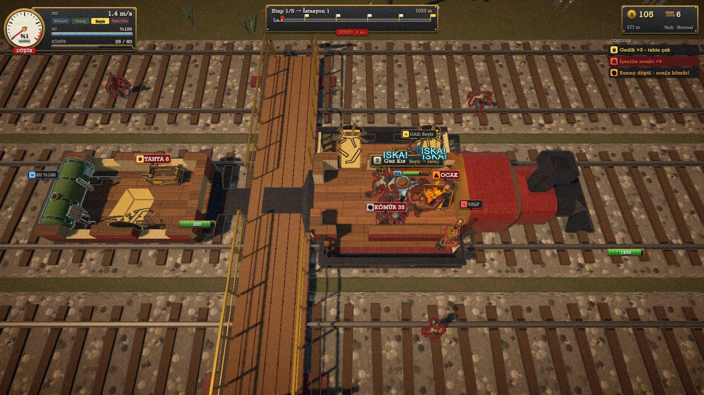
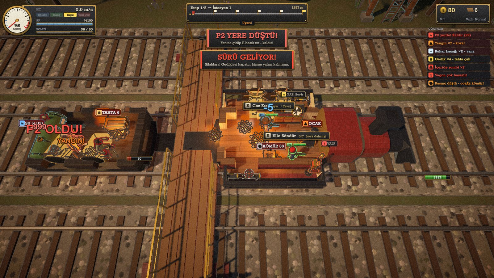
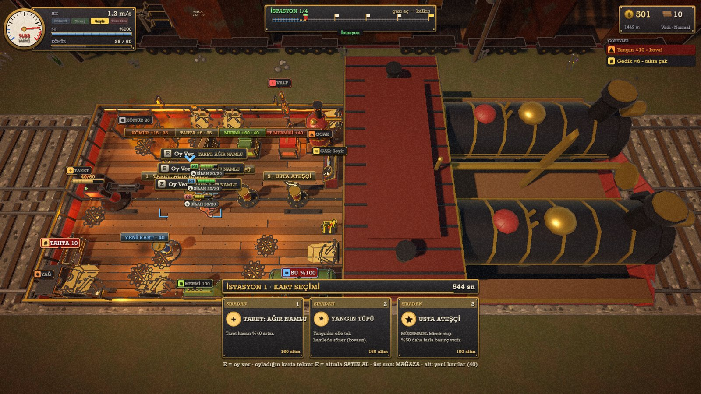
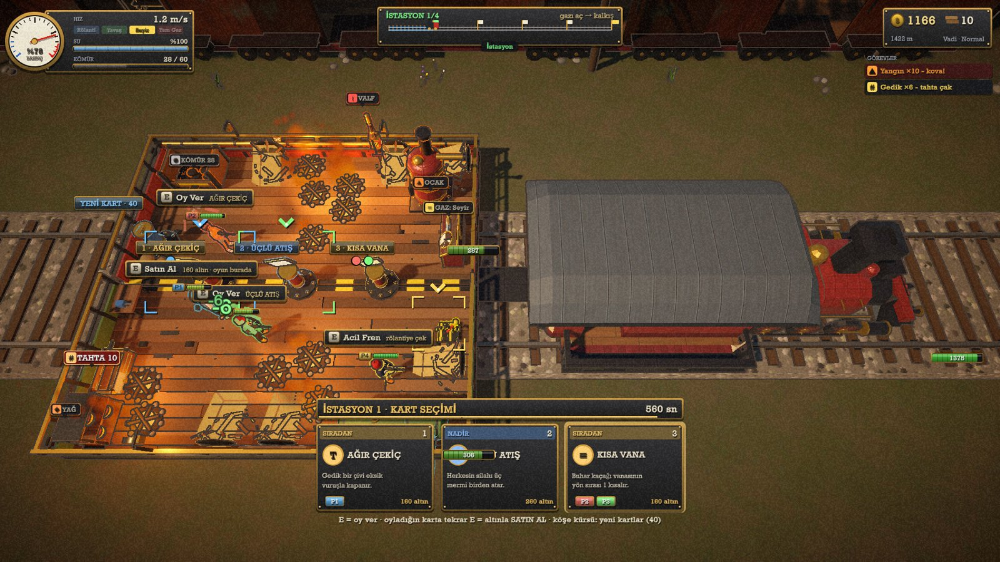
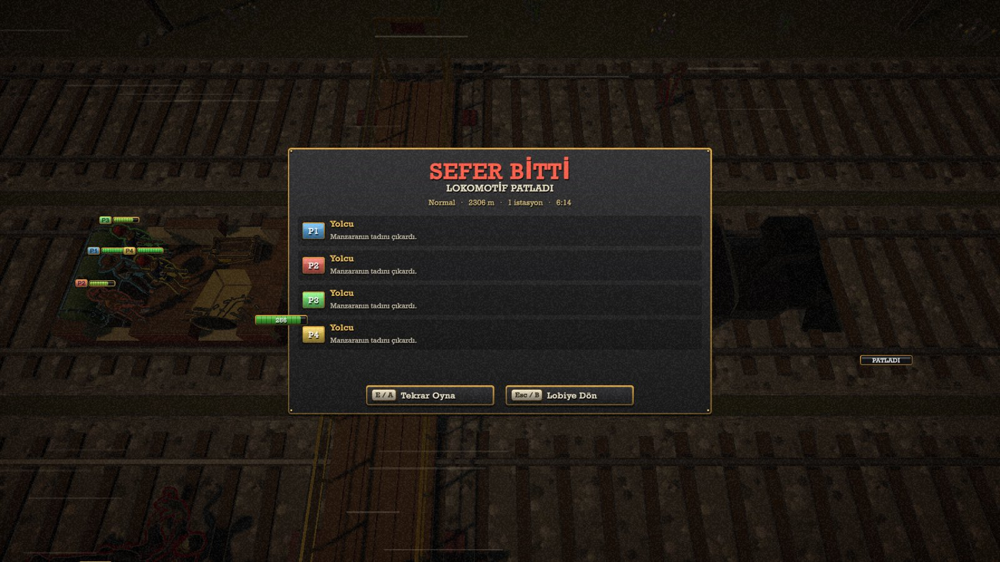

You and three friends keep a giant locomotive alive as it never stops moving. Speed depends on the coal you feed the boiler: burn too much and the pressure blows, burn too little and the zombies catch up. Fires, hull breaches, overheating axles and roguelike cards picked at every station keep all four players constantly depending on each other.
LAST RAIL combines the panicked division of labour of Overcooked with train management and survival. It is played by 1–4 players on the same screen, and every player's job depends on the others': one carries coal while another puts out a fire, one seals a breach with planks, and one holds off enemies from behind a turret.
Over a run the train reaches a series of stations. At each one the crew votes on a card, buys ammo and coal from the shop, and carries upgrades to teammates. If the locomotive explodes or the whole crew goes down, the run is over. The project contains 189 scripts and roughly 31,000 lines of code.
LAST RAIL is an experiment to test how powerful AI is: all of the code was written together with Claude Code. I set the game design, made the decisions and steered the direction. After a playtest with friends I had the train redesigned from scratch based on their feedback. The AI wrote the code and verified it with a playtest bot it built itself. My goal was to see how quickly, and how complete, a game could get with AI's help.
The result was better than I expected: the project went beyond a prototype. It is playable from start to finish — lobby, difficulty selection, a four-station run, a final stop and an end-of-run screen — and is close to a publishable state with only a little extra work. Character models come from the ithappy “Creative Characters” pack.







This project showed me that the real work of building with AI is not writing code but describing exactly what you want, then testing the result and steering it. Our first playtest with friends was not fun, so I took the feedback and had the train redesigned to be compact, with shared tasks. I also learned how hard it is to design interconnected systems (coal → pressure → speed → enemies → damage → new tasks), and how valuable an automated test bot is for a multiplayer game.